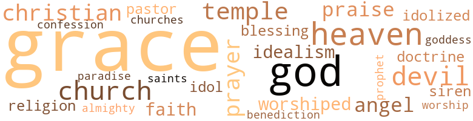

Who Was Responsible?, by Fullilove,Maggie (1919)
26 music-related terms matched in this text.
Most frequent terms in this topic: dance (6); melody (3); line (3); music (2); whistled (2)
croon.v.01
Definition: sing softly
| word | sentence |
|---|---|
| crooned | " Here , drink this , Bobsy , dear , " she crooned ; " drink this , my honey . |
dance.n.01
Definition: an artistic form of nonverbal communication
| word | sentence |
|---|---|
| dance | The shade trees all along the streets stood thus splendidly arrayed , while a strong , steady southern breeze caught the leaves which had fallen and whirled them here and there in a mad , merry dance . |
| dance | When the dance was over her eyes were twin stars , her cheeks were roses . |
| dance | It makes men drink and dream , dance and caper in a fool 's paradise . |
dance.v.03
Definition: skip, leap, or move up and down or sideways
| word | sentence |
|---|---|
| dance | He could dance well , but was reluctant to try his skill here in this assembly , where dancing was indeed an art . |
| dance | He wanted to dance in this way continually . |
| dancing | His incoherent thoughts were that he did not want to ever stop dancing with her . |
| dance | Strange shadows seemed to dance in weird , wild mockery around the prostrate figure lying there on the bed and outside the covers . |
exposition.n.04
Definition: (music) the section of a movement (especially in sonata form) where the major musical themes first occur
| word | sentence |
|---|---|
| exposition | She had never before heard words used as such powerful weapons in the denunciation of wrong and the exposition of fraud . |
melody.n.02
Definition: the perception of pleasant arrangements of musical notes
| word | sentence |
|---|---|
| melody | Presently the sound melted into the soft , alluring melody of a grand old waltz , and the dancing began . |
music.n.01
Definition: an artistic form of auditory communication incorporating instrumental or vocal tones in a structured and continuous manner
| word | sentence |
|---|---|
| music | There was always soft music and dancing , cards and other simple games . |
| music | After dinner the wonderful music began playing again . |
musical_instrument.n.01
Definition: any of various devices or contrivances that can be used to produce musical tones or sounds
| word | sentence |
|---|---|
| instrument | While she stood there her lips moved in prayer : " Be pleased , O God , to make me a fit instrument for thy work ; sanctify my heart ; quicken and enlighten my mind ; let me be endowed with patience , perseverance , and unwavering faith ; of all things , let me labor with an eye single to thy glory . |
refrain.n.01
Definition: the part of a song where a soloist is joined by a group of singers
| word | sentence |
|---|---|
| refrain | " It is going to be a great fight , my daughter - one that will require statesmanship and leadership of the very highest order , to be able to carry on the prohibition amendment campaign and at the same time refrain from detracting the people 's interest from their great duty of helping to terminate this war successfully . " |
section.n.01
Definition: a self-contained part of a larger composition (written or musical)
| word | sentence |
|---|---|
| section | Presently through that wan , mysterious , and melancholy light a bell sounded from a distant section of the city . |
sing.v.02
Definition: produce tones with the voice
| word | sentence |
|---|---|
| sang | Toward the last he became uplifted again - so much so that his heart sang in his bosom . |
singing.n.01
Definition: the act of singing vocal music
| word | sentence |
|---|---|
| singing | While she prayed there seemed to be a choir of angels singing in her ears . |
symphony.n.01
Definition: a long and complex sonata for symphony orchestra
| word | sentence |
|---|---|
| symphonies | Their childish laughter filled his soul with symphonies , soft and sweet - laughter which fills the eyes with light and the heart with joy , laughter which catches , holds , and glorifies all the tears of grief . |
tune.n.01
Definition: a succession of notes forming a distinctive sequence
| word | sentence |
|---|---|
| melody | She heard the plaintive , sad-sweet melody of the wood dove . |
| melody | In every home he saw Queen Love - the morning and the evening star - shedding her radiance upon the parent and the child - Love , the mother of beauty , the mother of melody , the builder of every hope , the kindler of every fire on every hearth - Love that makes earth heaven and men gods . |
| line | Of the sun there remained a crescent , a line , a sparkle of light , then the sun was gone - and at that very moment John Drew entered into eternity . |
| line | In the narrowest part of the strait , between Calais and Dover , there lay a long line of torpedo boats , gunboats , light cruisers , and destroyers . |
| line | So intent was he in this line of unpleasant , bitter thinking that he did not hear the door open , nor see the ruddy face of Robert framed therein , until the young man 's " Hello , Pater ! " aroused him . |
upright.n.02
Definition: a piano with a vertical sounding board
| word | sentence |
|---|---|
| upright | With a desperate effort he started upright and gazed wildly around . |
whistle.v.01
Definition: make whistling sounds
| word | sentence |
|---|---|
| whistled | One night about eleven o'clock Robert suddenly awoke out of a troubled sleep , in which he dreamed that he was seized with a great thirst and had drunk gallon after gallon of water without allaying that thirst The fire burned low in the grate ; the wind outside whistled frigidly . |
| whistled | Outside the night was chill and raw , and rendered boisterous by a gale of wind which whistled along the streets . |
124 violence-related terms matched in this text.
Most frequent terms in this topic: spite (15); fight (13); hated (5); alcoholism (5); brave (5)
abhorrence.n.01
Definition: hate coupled with disgust
| word | sentence |
|---|---|
| abhorrence | We know also that , so far as America 's relation in the struggle was concerned , it looked at first upon the European nations ' strife with somewhat indifferent eyes ; but as the struggle progressed , America began to watch with increasing abhorrence and amazement those methods of war employed by the imperial German government - methods which gave evidence more and more of that government 's character and aim . |
| abhorrence | His exalted sense of truth and right , his strict adherence to all that was noble , and marked abhorrence for the ignoble , were her strongest incitement . |
alcoholism.n.01
Definition: habitual intoxication; prolonged and excessive intake of alcoholic drinks leading to a breakdown in health and an addiction to alcohol such that abrupt deprivation leads to severe withdrawal symptoms
| word | sentence |
|---|---|
| alcoholism | " I will not rest , " he said , " until not only my State but my country shall be free from alcoholism . " |
| alcoholism | Her chief purpose in doing this was to gain a thorough knowledge concerning the effects of alcoholism upon the peasants . |
| alcoholism | In it she had aimed an effective blow at alcoholism . |
| alcoholism | America must take care lest , treading upon the heels of victory , there shall come other forms of oppression ; and to-day there exists no greater form of menace within all America 's boundary than alcoholism . |
| alcoholism | When the war is ended and the nation 's soldiers return from the perils which they have been called upon to face on land and on sea , let them not return to find that alcoholism with its mighty power stands waiting with new opportunities to debauch and destroy that which love and pride and self-sacrifice have won for them . |
anger.n.01
Definition: a strong emotion; a feeling that is oriented toward some real or supposed grievance
| word | sentence |
|---|---|
| anger | Jean sprang up , his two small fists clinched in anger as he confronted the red-eyed brute-man who staggered into the room . |
assail.v.01
Definition: attack someone physically or emotionally
| word | sentence |
|---|---|
| assaulted | Ruthlessly she assaulted America 's pet , soft-footed , velvet-masked folly of society , demanding that all intelligent Christian citizens pause in their headlong career , then decide once for all whether a God-fearing nation , under the white banner of the Christian religion , would further tolerate this mortal enemy of peace and order , this despoiler of all that is best in man . |
assassinate.v.01
Definition: murder; especially of socially prominent persons
| word | sentence |
|---|---|
| assassinate | There shall be no more brutal homes for young wives ; no more shall the homecoming of the drunken wretch assassinate joy and murder happiness in that sanctuary of love - the home . |
battle.v.01
Definition: battle or contend against in or as if in a battle
| word | sentence |
|---|---|
| battled | As they walked down the street there was a singular contrast in their two figures : he dark and picturesque , one who had battled with the world , whom all suns had shone upon , and whom all winds had blown in a varied course ; yet their faces , all unlike as they were , had an expression not so alien - a glow of kindred feeling flashed outward , born of one common interest . |
butcher.v.01
Definition: kill (animals) usually for food consumption
| word | sentence |
|---|---|
| slaughtered | I shall never be content until alcohol be slaughtered in his stronghold . |
character_assassination.n.01
Definition: an attack intended to ruin someone's reputation
| word | sentence |
|---|---|
| assassination | Each of them feared that such a measure might mean his political assassination . |
craze.n.02
Definition: state of violent mental agitation
| word | sentence |
|---|---|
| frenzy | Vigorously and in a sort of frenzy he applied himself to his task . |
| frenzy | More than the hunger after bread - more than the frenzy of love , this poison hunger overpowers every other instinct . |
| frenzy | He sat there staring into the fire , his mind worked up into a sort of frenzy at the thought of Robert 's going there to work - his boy , who had been brought up almost entirely without any knowledge of alcoholics . |
| frenzy | When the frenzy of it wore itself out at last , he grew calm with that dreadful calmness of stupefaction and exhaustion . |
deathblow.n.01
Definition: the blow that kills (usually mercifully)
| word | sentence |
|---|---|
| deathblow | The greatest wish of his heart was to strike the deathblow of revenge , but to-day he rejoiced to find his hands still clean of crime . |
destroy.v.04
Definition: put (an animal) to death
| word | sentence |
|---|---|
| destroyed | Think of the millions destroyed not only in body but in soul by the ravages of alcohol ! |
| destroy | Let the Government , in which it is most largely vested , destroy it . |
| destroy | Suddenly he stopped up his ears , but in sheer fascination removed his fingers just in time to catch the words : " Let that Government in which it is most largely vested destroy it . |
| destroy | The civilization which begot this evil must destroy it or else be forever branded with the scarlet letter of its own crime . " |
| destroy | The boy should have a chance to rise above the humiliating station in which society 's curse had placed him - - a chance to climb up beyond the reach of that subtle menace which threatened to destroy him . |
eliminate.v.03
Definition: kill in large numbers
| word | sentence |
|---|---|
| eradicate | " For these , if for no other reasons , the American people must eradicate this evil ; and , in view of the fact that no attempt to regulate it has been successful , the only thing which remains to be done is to eradicate the evil , root and branch . |
| eradicate | " For these , if for no other reasons , the American people must eradicate this evil ; and , in view of the fact that no attempt to regulate it has been successful , the only thing which remains to be done is to eradicate the evil , root and branch . |
| annihilated | In deepest contrition she bowed her head in silent prayer : " O God , let me not rest until this greatest curse of mankind shall be annihilated , and the country free from this evil which has so cruelly slain my newborn happiness . " |
elimination.n.05
Definition: the murder of a competitor
| word | sentence |
|---|---|
| elimination | He had not done his very best in pledging the youth and populace of his own parish to do their utmost toward the elimination of alcohol from their own homes and the homes of their various friends . |
engage.v.07
Definition: carry on (wars, battles, or campaigns)
| word | sentence |
|---|---|
| waged | Besides the aggressive warfare it has waged against the alcohol evil , it has been instrumental in having many States enact laws prohibiting the sale of tobacco to minors ; laws raising the age of consent and providing for better protection for women and girls . |
| waged | And we see those valiant soldiers who have waged the long warfare for temperance rejoicing in the fact that they have won for America national prohibition as a crowning glory and a richest blessing ! |
exterminate.v.01
Definition: kill en masse; kill on a large scale; kill many
| word | sentence |
|---|---|
| exterminate | ' The city council is responsible for the license which I issue , ' he says - a statement which is also true - therefore I knew that I must look to you to exterminate this evil . |
fight.n.05
Definition: a boxing or wrestling match
| word | sentence |
|---|---|
| fight | He was regarded as a very efficient officer - aggressive in the fight for better sanitary conditions , untiring in his efforts toward the eradication of preventable diseases . |
| fight | " Uncle , " she remarked to her kinsman one day , " the desire to continue the fight for national prohibition has been woven into the very warp and woof of my life . |
| fight | But bearing this yoke of economy gives a sort of pleasure , because we feel that we are doing it for the grand purpose of making all the people and all the resources of the country supremely effective in this fight for humanity . |
| fight | " It is going to be a great fight , my daughter - one that will require statesmanship and leadership of the very highest order , to be able to carry on the prohibition amendment campaign and at the same time refrain from detracting the people 's interest from their great duty of helping to terminate this war successfully . " |
| fight | " It is for his sake and all like him that I am determined to keep up this fight for national prohibiton complete . " |
| fight | He also had the secret belief that the relentless fight which he had carried on through his paper was largely responsible for the prompt ratification by his State . |
| fight | They realized that they had only made a very effective beginning in the fight . |
| fight | It makes me regret that I am not more advanced in years so that I might have a hand in my country 's fight for humanity and right . " |
| fight | Any industry that steels itself against these facts , and steals those vitals which give life and strength to the men who are engaged in the fight for justice and clean hopes of freedom and equal rights for all men is a Thief and Robber ! |
fight.v.02
Definition: fight against or resist strongly
| word | sentence |
|---|---|
| fight | " We will fight this evil with all our might , '' he said to her ; " neither shall we be at peace until we see this country free of its poison . |
| fight | May God give us strength to fight - to tear down the temple of Bacchus and lay the foundation of the magnificent temple of righteousness , wherein , with appropriate rites , there will be celebrated the religion of humanity ! |
| fight | It fell to the lot of some to make munitions : others , to run ships and railroads ; others , to work in the mines ami in the forests ; others , to plant , cultivate , and harvest , and still others , to fight on land and sea . |
| fight | Somebody 's got to fight this thing to a finish . |
fury.n.01
Definition: a feeling of intense anger
| word | sentence |
|---|---|
| fury | Outside the wind swept around the corner of the house in frigid fury . |
| Rage | Rage , humiliation , fear , scorn - all struggled to gain supremacy in this mother 's face . |
| furies | Through him she was able to throttle the furies whose accursed fingers clutched at Young America in order to destroy . |
| rage | No one knew - not even Miss Grace herself was aware of the rage of passion that was racing through Robert . |
| rage | John Drew eyed the sparkling fluid amidst a tumult of rage . |
| fury | Such a sudden fury lit up John Drew 's eyes that Croggs involuntarily recoiled . |
| rage | John Drew 's teeth bared in a snarl of rage . |
grudge.n.01
Definition: a resentment strong enough to justify retaliation
| word | sentence |
|---|---|
| grudge | " It is I , for truth , " said Larrimore ; " but , my friend , I have no grudge against any man . |
gun.n.01
Definition: a weapon that discharges a missile at high velocity (especially from a metal tube or barrel)
| word | sentence |
|---|---|
| gun | Having only a few moments in which to catch the early train going out to New Gate , John Drew thrust a few things into a bag , slipped the gun into his pocket , and dashed out of the house in almost an instant . |
hate.n.01
Definition: the emotion of intense dislike; a feeling of dislike so strong that it demands action
| word | sentence |
|---|---|
| hatred | Do you wonder then that I bear an everlasting hatred to the thing that wrecked his life ? |
| hatred | This fact caught the attention of Miss Grace and stirred all her dormant hatred against this curse of the American people . |
| hatred | She observed with jealous hatred the continued work of this ruthless industry , took strict notice of the vast amount of the nation 's much needed food which it consumed . |
| hatred | I am drawn to it by the irresistible force of my everlasting hatred against alcohol . " |
hate.v.01
Definition: dislike intensely; feel antipathy or aversion towards
| word | sentence |
|---|---|
| hating | I am glad to be instrumental in this work , for I , too , have a just cause for hating intoxicants , as you well know . " |
| hated | He hated alcohol as he hated no other substance in all creation . |
| hated | He hated alcohol as he hated no other substance in all creation . |
| hated | As Miss Grace reviewed the summary of the advance toward the overthrow of her most hated enemy , suddenly a glory illumined the future . |
| hated | Now he hated her foolish , baby talk , and wanted her out of his sight . |
| hated | Robert , in his eagerness for her to begone , hated her . |
injury.n.01
Definition: any physical damage to the body caused by violence or accident or fracture etc.
| word | sentence |
|---|---|
| hurt | '' Fellow citizen , " Mr. Anderson said in reply to John Drew , '' I am in deep sympathy with the grievous hurt you bear . |
| injury | Does your fear of political injury outweigh your interest in humanity ? |
| injury | " In making the State dry , " he said , " we will be doing it a much greater injury than benefit . |
| hurt | All the old , pent-up grief and hurt which his hope of victory had kept quelled during the campaign now burst loose with redoubled force . |
| injury | Let me beg of my readers not to be too harsh in their judgment and dub these men as cowards because they feared political injury . |
| hurt | While he gazed upon the photograph of his unfortunate offspring , his mind had suddenly seized the terrible idea which in his unbalanced , frenzied condition of mind seemed the only retribution that would soothe his hurt and much wronged heart - murder ! |
kick_back.v.02
Definition: spring back, as from a forceful thrust
| word | sentence |
|---|---|
| kicking | " Useless , outgrown relics of the past , " thought Robert , ruthlessly kicking the rusted wheels from the heaps of discarded rubbish . |
kill.v.10
Definition: cause the death of, without intention
| word | sentence |
|---|---|
| kill | I came here to kill Croggs ; but he - wily wretch though he is - he is not responsible for the laws which you gentlemen make and enforce . |
| kill | Another disappointment would kill me . |
| kill | I 'll kill her first ! " |
| kill | " Robert ! " he cried as he went down , " you kill me ! " |
| Kill | Kill me , and the work goes on , while you gain nothing but bloody hands and the gallows . |
malice.n.01
Definition: feeling a need to see others suffer
| word | sentence |
|---|---|
| spite | In spite of all handicap , she worked wisely and well . |
| spite | With a mighty effort he stifled the fear that would , in spite of him , find a place in his heart . |
| spite | That young man , so beautifully endowed with manly qualities , in spite of his father 's utmost caution , had fallen a victim to alcohol . |
| spite | Whenever we discover an existing evil that is particularly favored by thieves , robbers , and all classes of criminals , something that will make trouble if we try to enforce laws that will prohibit it , should we legalize the thing , encourage it , promote and protect it in spite of the mischief it will do among men ? |
| spite | But in spite of the fact that the Gibson bill had been defeated , the vote in Congress showed a great triumph for the national prohibition movement , 386 of the 433 members of the House declared themselves on the Gibson resolution for constitutional prohibition . |
| spite | John Drew 's voice was strikingly clear and distinct in spite of his weakness . |
| spite | In spite of what this boy 's mother is , think what his father was - think , Grace ! " |
| spite | Life had brought some fair things for her boy in the last few years , in spite of the terror which had constantly hung over them . |
| spite | She had managed in some way to keep things as cheerful as possible , taking infinite care in teaching him to find beauty and sunshine in life in spite of the gloom which overshadowed them . |
| spite | In spite of his father 's cruelty and drinking , the boy 's life here had been his happiest . |
| spite | What a wonderful woman - to have maintained her loveliness , her superior intelligence in spite of the wilderness of trials through which she had struggled ; who had not allowed poverty nor social standing to paralyze her ambition to improve herself in every way she could , so that now she was able to surround her home with an atmosphere of refinement , culture , and purity . |
| spite | In spite of Jean 's youth , he had already begun to show keen interest in the affairs of the nation . |
| spite | Do you stand up and contend that , in spite of our soldiers ' needs , you will not comply with the country 's request because it interferes with your individual rights ? |
| spite | The cruel truth had been thrust upon her , that the curse which they feared most had descended upon Robert in spite of all their caution . |
| spite | It charmed her soul in spite of herself . |
murder.n.01
Definition: unlawful premeditated killing of a human being by a human being
| word | sentence |
|---|---|
| murder | There shall be no more brutal homes for young wives ; no more shall the homecoming of the drunken wretch assassinate joy and murder happiness in that sanctuary of love - the home . |
| murder | He lowered the weapon , and Croggs saw the look of murder miraculously turned to wonder and amazement . |
| murder | The joy which came over John Drew when he discovered his failure in committing the murder far surpassed the savage joy of revenge , however complete . |
murder.v.01
Definition: kill intentionally and with premeditation
| word | sentence |
|---|---|
| slain | Soon the time came when American citizens , sailing on American ships , under American flags , were slain by German submarines in absolute and vicious disregard of a nation 's rights . |
| slain | In deepest contrition she bowed her head in silent prayer : " O God , let me not rest until this greatest curse of mankind shall be annihilated , and the country free from this evil which has so cruelly slain my newborn happiness . " |
musket_ball.n.01
Definition: a solid projectile that is shot by a musket
| word | sentence |
|---|---|
| ball | It was to be a ball , given in honor of Miss Grace King 's return from abroad . |
| balls | After she had babbled sweetly about fashion , society , balls , receptions , operas , and theaters for several minutes , she turned upon him a marvelously penetrating glance of her dark eyes , a glance which startled him as much as an unexpected flash of light might have done . |
open_fire.v.01
Definition: start firing a weapon
| word | sentence |
|---|---|
| fired | He drew the revolver from his pocket and found that no bullet had been fired . |
projectile.n.01
Definition: a weapon that is forcibly thrown or projected at a targets but is not self-propelled
| word | sentence |
|---|---|
| missiles | Many a time had he sought refuge from showers of hostile missiles by running into the house of old Tom Greely . |
riot.n.01
Definition: a public act of violence by an unruly mob
| word | sentence |
|---|---|
| riot | She could almost see the riot of color in the darling garden in front of the house - a profusion of yellow jonquils , crocuses , violets , and lilacs ; and sweet , sweet roses ; the hundreds of little wild beauties upon the lawns ; the gleam of white dogwood blossoms among the trees in the background . |
sic.v.01
Definition: urge to attack someone
| word | sentence |
|---|---|
| set | Her heart was set upon succoring this child , and he knew it would be no easy matter to dissuade her from her purpose . |
sting.n.03
Definition: a painful wound caused by the thrust of an insect's stinger into skin
| word | sentence |
|---|---|
| sting | No one shall do more towards purifying society , ridding it from alcohol 's venom sting , than I shall do . |
strangle.v.01
Definition: kill by squeezing the throat of so as to cut off the air
| word | sentence |
|---|---|
| strangle | He had a mad desire to kiss her - to devour her - to strangle her with love . |
suffocation.n.01
Definition: killing by depriving of oxygen
| word | sentence |
|---|---|
| suffocation | All at once his throat filled with a cold suffocation ; tears flooded his eyes , and he broke into a loud sob of fiercest agony as he fell upon his knees beside the bed . |
suicide.n.01
Definition: the act of killing yourself
| word | sentence |
|---|---|
| suicide | Were it not for poor little Jean , I could commit suicide . |
| suicides | Think of the suicides , the insanity , the abject poverty , ignorance , and destitution all over the State . |
| suicide | For the last day or so he had acted that way , as if he was trying to make up his mind to a contemplated suicide . |
torment.v.01
Definition: torment emotionally or mentally
| word | sentence |
|---|---|
| torture | The cry was like the last exclamation wrung from a creature on the inquisition rack of torture . |
| torture | He was madly enjoying this cowardly dog 's torture . |
torpedo.v.01
Definition: attack or hit with torpedoes
| word | sentence |
|---|---|
| torpedo | In the narrowest part of the strait , between Calais and Dover , there lay a long line of torpedo boats , gunboats , light cruisers , and destroyers . |
violence.n.01
Definition: an act of aggression (as one against a person who resists)
| word | sentence |
|---|---|
| violence | The policeman then searched the body for signs of violence . |
war.n.03
Definition: an active struggle between competing entities
| word | sentence |
|---|---|
| warfare | Besides the aggressive warfare it has waged against the alcohol evil , it has been instrumental in having many States enact laws prohibiting the sale of tobacco to minors ; laws raising the age of consent and providing for better protection for women and girls . |
| warfare | Since the death of John Drew , this minister had striven to make his entire church a solidified , active , aggressive , and obedient unit in the warfare on intemperance . |
| warfare | It proved to be most beneficial in that it gave those who attended the opportunity to form into an effective unit for the grand purpose of making a final and successful warfare against the liquor industry in America . |
| warfare | And we see those valiant soldiers who have waged the long warfare for temperance rejoicing in the fact that they have won for America national prohibition as a crowning glory and a richest blessing ! |
weapon.n.01
Definition: any instrument or instrumentality used in fighting or hunting
| word | sentence |
|---|---|
| weapons | She had never before heard words used as such powerful weapons in the denunciation of wrong and the exposition of fraud . |
| weapon | The arm which held the weapon was as steady as an arm of steel . |
| weapon | He lowered the weapon , and Croggs saw the look of murder miraculously turned to wonder and amazement . |
weather.v.01
Definition: face and withstand with courage
| word | sentence |
|---|---|
| brave | Miss Grace paused , then continued : " If this should be so - using the words of Catherine of Russia , ' I beg you take courage ; the brave soul can mend even disaster . ' " |
| brave | It takes a hero to brave any kind of danger . |
| braved | In an adjoining State there resided a man who had already startled the world with his daring and patriotism when he , an officer in the American navy , at the risk of his own life , braved the perils of the sea and the deadly fire of the enemy in order to render his country a service which should always live in the hearts of a grateful people . |
| brave | By this brave deed he had already sprung into nobility , worth , and service . |
| brave | But her brave spirit was not one which brooded long in morbid fancies . |
| brave | He picked up the empty bottle and stared from it to the wreck upon the bed , with a strained and startled gaze of a brave man wounded to the death . |
wrestle.v.01
Definition: combat to overcome an opposing tendency or force
| word | sentence |
|---|---|
| wrestle | Her heart ached with pain when she thought of how those two , the mother and son , had to grapple with hardships , wrestle with poverty , in order to buy a book for Jean 's hungry little soul . |
265 religion-related terms matched in this text.
Most frequent terms in this topic: Grace (165); God (18); heaven (8); devil (7); church (6)
benediction.n.02
Definition: a ceremonial prayer invoking divine protection
| word | sentence |
|---|---|
| benediction | " It is perfect ! " she breathed while she stood watching it nestled there among clinging vines and hardy shrubbery - amidst a sort of peaceful repose which seemed ever to rest like a benediction upon it . |
blessing.n.05
Definition: the act of praying for divine protection
| word | sentence |
|---|---|
| blessing | Her uncle knew that this great love had proved a blessing to her , for it had been the means of transforming his beloved kinswoman into the being who stood before him now - a woman of broadest sympathies and great kindness of heart . |
| blessing | And we see those valiant soldiers who have waged the long warfare for temperance rejoicing in the fact that they have won for America national prohibition as a crowning glory and a richest blessing ! |
christian.n.01
Definition: a religious person who believes Jesus is the Christ and who is a member of a Christian denomination
| word | sentence |
|---|---|
| Christian | Miss Grace at once became a member of the Woman 's Christian Temperance Union . |
| Christian | And well she might , for the great Woman 's Christian Temperance Union , during the forty-two years of its existence , has done a great deal more for society than the average citizen realizes . |
| Christian | Miss Grace organized a local Woman 's Christian Temperance Union and the effect of that movement was satisfactory . |
| Christian | The most beautiful sight of all was the turnout of the Woman 's Christian Temperance Union . |
| Christian | Ruthlessly she assaulted America 's pet , soft-footed , velvet-masked folly of society , demanding that all intelligent Christian citizens pause in their headlong career , then decide once for all whether a God-fearing nation , under the white banner of the Christian religion , would further tolerate this mortal enemy of peace and order , this despoiler of all that is best in man . |
church.n.02
Definition: a place for public (especially Christian) worship
| word | sentence |
|---|---|
| church | The sale of liquor , therefore , is not a business but a crime against the man , the church , and the State . |
| church | I go to church on Sundays . |
| church | The false friends of society who bombard the tender youth with alcoholic drinks could answer the question if they would ; the wily barkeeper , who picks the pockets of the poor , robs men of their money and honor , who ruthlessly commits crime against the man , the home , the church , the State , and the country , could answer the question . |
| church | She was forever busy , working in the various well-organized clubs , in the church , in everything which pertained to the improvement of the city . |
| church | The Sentinel paid special tribute to the faithful activity of the pastor of the church where the Drews had worshiped . |
| church | Since the death of John Drew , this minister had striven to make his entire church a solidified , active , aggressive , and obedient unit in the warfare on intemperance . |
church.n.04
Definition: the body of people who attend or belong to a particular local church
| word | sentence |
|---|---|
| churches | Here and there at various distances apart rose the graceful campaniles of distant churches . |
| Church | The minister of St. Mark 's Church , in Hollyville , and who was the pastor of the two deceased , read the editorial , and felt that a great measure of the responsibility rested upon him . |
confession.n.05
Definition: the document that spells out the belief system of a given church (especially the Reformation churches of the 16th century)
| word | sentence |
|---|---|
| confession | Jean was awed by the great wisdom of his employer , and fascinated by his brilliant conversation , in which he was not yet able to take part , for he was as yet only in that pleasant borderland where , with suspended judgment and ready observation , it was his part to listen and learn and study , and to hold his tongue , regarding it as a positive duty to keep his own opinions to himself , or when questioned , to put them forward with all due modesty and confession of ignorance . |
curate.n.01
Definition: a person authorized to conduct religious worship
| word | sentence |
|---|---|
| pastor | The minister of St. Mark 's Church , in Hollyville , and who was the pastor of the two deceased , read the editorial , and felt that a great measure of the responsibility rested upon him . |
| pastor | The Sentinel paid special tribute to the faithful activity of the pastor of the church where the Drews had worshiped . |
doctrine.n.01
Definition: a belief (or system of beliefs) accepted as authoritative by some group or school
| word | sentence |
|---|---|
| doctrine | There is nothing more insincere than the statement that national prohibition will violate the doctrine of States ' rights . " |
| doctrine | Drew then went to the city clerk , the city council , the State 's legislature , and finally carried the matter before the national Congress - each of which disclaimed the responsibility : the city claiming that this matter should be referred to the State ; the State , that it should be referred to the Federal Government , and Congress claimed that national prohibition would violate the doctrine of States ' rights , that it is a matter which the States should settle themselves . |
eden.n.01
Definition: any place of complete bliss and delight and peace
| word | sentence |
|---|---|
| heaven | He has arrayed his mighty forces of heaven and hell against one miserable atom of his own creation , and the titanic wheels of life , time , and eternity are all whirling into motion to grind me , a poor worm , down to destruction ! |
| heaven | In every home he saw Queen Love - the morning and the evening star - shedding her radiance upon the parent and the child - Love , the mother of beauty , the mother of melody , the builder of every hope , the kindler of every fire on every hearth - Love that makes earth heaven and men gods . |
| heaven | The whole room was lit up with a holy radiance - not of earth , but of heaven - as the sun sank steadily , slowly , round and shining , without a single cloud in the horizon - beautiful as she had never seen it before . |
| heavens | Great , glittering stars clustered in the heavens . |
| heaven | Vacantly her eyes rested on this glorious picture , but its splendor passed away unheeded , for she was looking far beyond the western gates of day and seeing a ghastly , distorted face turned up toward heaven - a coffined corpse ready for its last resting place of dishonor and shame . |
| heaven | He looked upward and discerned no sky , not even an unfathomable void , but only a black and impenetrable nothingness , as though heaven and all its lights had been blotted from the system of the universe . |
| heaven | So in these chaste and warm affections , humble wishes , and honest toil for some useful end , he found health for his mind and quiet for his heart , the prospect of happy old age , and , fairest hope of all - the hope of heaven . |
| paradise | It makes men drink and dream , dance and caper in a fool 's paradise . |
| heaven | His father tucked him in with unusually tender hands , and before he left , dropped on his knees beside the bed , evoking the mercies of heaven for grace which alone could sustain in keeping his son from the evil influence of whisky . |
| Heavens | " Heavens have mercy upon us ! " she inwardly groaned , and she quickly thrust the bottle back into its hiding place . |
| heaven | She raised her face toward heaven , and there was indeed a light in her eyes and hope in her soul . |
god.n.03
Definition: a man of such superior qualities that he seems like a deity to other people
| word | sentence |
|---|---|
| God | Tenderly he stroked her bowed head and mingled his tears with hers , praying that God would give her strength to bear this crowning sorrow of her life . |
| God | God is just and wise . |
| God | " My time and destiny are in God 's hands , " she said . |
| God | Often her thoughts reverted to that short period of her life which marked its turning point - that wonderful , vibrating , palpitating starlight time of her awakening , against the memory of which there was always her careless flirtation ; then the marvelous but gentle leading of God 's hand . |
| God | " My time and destiny are in God 's hands , " was her constant thought . |
| God | Some even advanced the argument that prohibition attempts to remove temptation from men , while God 's plan is to permit temptation to exist in order to strengthen man 's moral power , therefore prohibition is not in accord with God 's method ( as if man must take sides with the devil in order to prove the Lord a true prophet ) . |
| God | Some even advanced the argument that prohibition attempts to remove temptation from men , while God 's plan is to permit temptation to exist in order to strengthen man 's moral power , therefore prohibition is not in accord with God 's method ( as if man must take sides with the devil in order to prove the Lord a true prophet ) . |
| God | This , then , was God 's mysterious plan of bringing about a greater achievement . |
| God | I often wondered at God 's mercy in choosing me for the father of such a son - then I 'd remember that he was Alice 's son , too ; that he was the offspring of her great love for me . |
| God | God was indeed merciful : my life , which could never have survived the loss of my young wife , was brightened and blessed by this perfect son of hers . |
| gods | In every home he saw Queen Love - the morning and the evening star - shedding her radiance upon the parent and the child - Love , the mother of beauty , the mother of melody , the builder of every hope , the kindler of every fire on every hearth - Love that makes earth heaven and men gods . |
| God | Now , since God has given us light to see our duty , we pray him to give us strength to discharge it . " |
| God | Continue to do as you have always done , and ask God to bless every effort you may put forth . " |
| God | Outside , God 's changeless stars looked down upon that lonely cabin where alcohol 's cruel hand had added one more crime to its enormous list ; one more example of manhood destroyed , another character debauched , the wreck of love and happiness to another one of America 's homes . |
| God | Mechanically her hands caressed the bowed head upon her breast , while her countenance became eloquent with determination and with humble gratitude to God for giving her wisdom to choose that path , with grace and courage and strength to pursue it . |
| God | Then , at the very time he needed it most , God had sent Jean a new friend , Miss Grace King , from the city . |
| God | Gradually the mother 's fear and timidity vanished and she was able to converse with ease and confidence , while her heart swelled with gratitude to these two good people whom God had sent in the very hour of her sorest need . |
| god | Strike the fatal blow now , lest in the years to come we find our chaste hopes of liberty and freedom - dragged at the chariot wheels of Bacchus , god of Wine ! " |
| God | Would not the merciful hand of God stay the deed which would rip his soul from his body and hurl it quaking and all unprepared before its Maker ? |
| God | " If not , then there is something wrong in the system of creation - a flaw in the universe , and God himself can not be perfect ! " |
goddess.n.01
Definition: a female deity
| word | sentence |
|---|---|
| goddess | The room lent its charm to her queenly figure as she moved amid its efficient spaciousness like a goddess within her habitual temple . |
godhead.n.01
Definition: terms referring to the Judeo-Christian God
| word | sentence |
|---|---|
| Almighty | Her steps sounded upon the threshold , and John Drew started as if he feared some fresh and final stroke from the hand of the Almighty - a final punishment avenging his profane thoughts of a moment ago . |
grace.n.05
Definition: (Greek mythology) one of three sisters who were the givers of beauty and charm; a favorite subject for sculptors
| word | sentence |
|---|---|
| Grace | Miss Grace King , her color heightened by a rapid walk against a frigid wind , entered the office . |
| Grace | Grace troubled and old - why , it is preposterous ! |
| Grace | In passionate words which tore at her listener 's heart-strings , Miss Grace told the story of her love and loss - every minute detail from beginning to end , not sparing her own part in the tragedy . |
| Grace | Miss Grace shivered and clung to her uncle . |
| Grace | Then he said to Miss Grace , " You have n't told me his name , dear child . " |
| Grace | Finally Miss Grace spoke again : " Do you think the undertaking most difficult , dear uncle ? " |
| Grace | Miss Grace remembered well the sad fate of her only cousin and playfellow . |
| Grace | " I 'll meet him now , uncle , " said Miss Grace . |
| Grace | " Mr. Drew , this is Miss Grace King , my niece , " said her uncle . |
| Grace | To Miss Grace the resemblance of this man to Robert was striking . |
| Grace | John Drew caught the eager look on Miss Grace 's face just then , and quickly curbed his excessive vehemence . |
| Grace | Seeing the look of wonderment on John Drew 's face as he thus freely conversed with Miss Grace , Mr. Anderson thought it best to reveal the young woman 's delicate relation to the matter . |
| Grace | This , then , was the Grace King , daughter of Raymond King , the spendthrift . |
| Grace | It was a natural revulsion of feeling as he looked at Miss Grace . |
| Grace | Miss Grace 's uncle took her other hand , and the two men found themselves with the same vow , that each would do his utmost in wiping out the curse which was destined to rob so many other women of their lovers and their husbands . |
| Grace | Miss Grace realized the responsibility which rested upon her , and the part she must take in the accomplishment of their undertaking . |
| Grace | For a woman of Miss Grace 's social standing to assume the r61e of leadership of a temperance movement is neither an easy task nor a very pleasant one . |
| Grace | The general statement that Miss Grace King had turned moralist and headed a temperance movement was discredited by most of her friends and viewed askance by several of them . |
| Grace | Miss Grace at once became a member of the Woman 's Christian Temperance Union . |
| Grace | Miss Grace organized a local Woman 's Christian Temperance Union and the effect of that movement was satisfactory . |
| Grace | Miss Grace rented an office in one of the most attractive buildings in the city , furnished rooms at her own expense , purchased literature - the best that could be procured - literature that would stimulate their interest in the prohibition movement , and at the same time was of educational value . |
| Grace | The work accomplished by Miss Grace during those days and weeks and months will ever be remembered by New Gate . |
| Grace | Mr. Anderson observed all Miss Grace 's movements with a great deal of pride . |
| Grace | Her love and interest in her work brought such a degree of pleasure to Miss Grace that it served to purify , strengthen , and beautify her nature . |
| Grace | One afternoon , after a very busy morning , Miss Grace decided to get a bit of recreation by taking a little pleasure trip of a few hours ' duration . |
| Grace | Exquisite and indefinable indeed was the charm of the early evening , exhilarating alike to mind and body , communicating its ineffable buoyancy to the young lady 's somewhat jaded energies ; and for a creature so responsive as Miss Grace to resist its influence was impossible . |
| Grace | Miss Grace felt her senses thrilled by the spell of the association - uniting the wild freshness of nature with the charm of civilization . |
| Grace | Miss Grace had never known anything about the life of the lowly . |
| Grace | It was opened only a little way , just enough for Miss Grace to catch a glimpse of two piercing , wondering , half-frightened eyes of a child . |
| Grace | A little boy regarded her in silence without opening the door any wider , then , reassured by the stranger 's smile , he slowly opened it wider and stood looking at Miss Grace in open-eyed amazement . |
| Grace | " You live here ? " asked Miss Grace sweetly . |
| Grace | That the little family which resided there was composed of people of gentle manners Miss Grace never for a moment doubted . |
| Grace | While the boy talked , Miss Grace noted his striking personality . |
| Grace | Miss Grace stooped and picked up one which lay near her . |
| Grace | " Miss King , " said Miss Grace , smiling one of her dazzling smiles , which never failed to warm the coldest heart . |
| Grace | Miss Grace took in the woman 's personality at a glance , and was convinced of her gentle breeding . |
| Grace | She somehow gave to Miss Grace the presentment of a queen who by the irony of circumstance was exiled in this lonely cabin of the woods - this solitary cabin of such pauperish mien . |
| Grace | Miss Grace 's bearing - quite innocent of any prying curiosity or priggishness - - soon evoked a spirit of friendliness and hospitality . |
| Grace | The yield of nuts this year has been unusual , " she said to Miss Grace , " and I have been fortunate in finding a ready sale for them . |
| Grace | " Does your little son read those ? " asked Miss Grace , pointing to the volumes of " Plutarch 's Lives , " Scott 's " Lady of the Lake , " and Hawthorne 's " Twice-told Tales . " |
| Grace | Her voice and smile were so frank and pleasant , so free from the previous restraint , yet so respectful , so gentle and womanly , so tender in her praise of her son , that Miss Grace found her own heart glowing . |
| Grace | Miss Grace had spent an hour in the little cabin before she realized that the perfect evening was drawing to a close . |
| Grace | Miss Grace felt an oppression in the air , and wishing to avoid further intrusion , she arose to go . |
| Grace | Miss Grace fell back against the wall - astounded . |
| Grace | Miss Grace stared at this tragedy in frozen horror . |
| Grace | Miss Grace moved swiftly out of the door and fled down the narrow road . |
| Grace | What a piteous look she gave the wondering Miss Grace ! |
| Grace | Her tears , the sincere outflow of a pure woman 's grief , fell like dew upon the younger woman 's heart , and for the moment Miss Grace was stricken with sympathy . |
| Grace | Miss Grace started involuntarily . |
| Grace | " It is true , " the poor mother moaned , as if answering Miss Grace 's thought . |
| Grace | Miss Grace 's journey to her own home was a sad one . |
| Grace | It lay within his power to finish the wreck or to rebuild it into an elegant mansion , blow Miss Grace adored the mother for cultivating her son 's aesthetic faculties ! |
| Grace | But Miss Grace resolved that , if the proud mother would allow , she would aid largely in creating a chance for the boy . |
| Grace | A degree of sadness crept into Miss Grace 's heart as she awoke to the sad realization of all the splendid opportunities which she had lost - opportunities for helping the struggling , ambitious poor to work their way to success . |
| Grace | Now in her thought of active work for the good of humanity , all seemed to be moving toward peace ; and Miss Grace could almost hear her lover 's voice bidding her to be of good cheer and go on with the work which lay so plainly before her . |
| Grace | Miss Grace and her uncle never dreamed of the state of excitement their companion was in . |
| Grace | Miss Grace herself was calm , confident , and hopeful . |
| Grace | As soon as possible , Miss Grace hastened to find John Drew . |
| Grace | A tender hand was laid upon his shoulder , a sweet voice which he had learned to recognize and to love came from the tender soul of Miss Grace : '' Do n't grieve so , dear friend ; all is not lost - indeed , not so . " |
| Grace | He turned his face upward and looked at Miss Grace for the first time since her coming . |
| Grace | Miss Grace was moved with tenderest compassion . |
| Grace | Miss Grace was beautiful - comely and quiet , as if all her emotions had been subdued to the peaceful tenor of her life . |
| Grace | " Now let us walk somewhere in the evening sunlight , " he said to Miss Grace , after their conference was over and Mr. Anderson had departed . |
| Grace | Little girl , we shall see it - you and I. " John Drew had spoken more to himself than to Miss Grace ; but now he turned to her and said : " I am glad you are interested as you are . |
| Grace | " Triumph of success comes not to doubt and disbelief , " said Miss Grace softly . |
| Grace | When they had thus walked in silence for a few blocks , Miss Grace spoke : " How fortunate for us to have secured the co-operation of Mr. Pearson , of the legislature . |
| Grace | Miss Grace paused , then continued : " If this should be so - using the words of Catherine of Russia , ' I beg you take courage ; the brave soul can mend even disaster . ' " |
| Grace | Miss Grace had been acquainted with Robert 's father only a few months , but her intuition told her that he would need such advice often . |
| Grace | It was to be a ball , given in honor of Miss Grace King 's return from abroad . |
| Grace | Robert was eager to meet this Grace King , whose praise was upon every tongue . |
| Grace | Miss Grace had recently heard him deliver an eloquent speech before the Woman 's National Temperance Union . |
| Grace | After they had failed to secure the consent of the congressmen from their own State , they became somewhat baffled ; but Miss Grace , remembering the eloquent speech from the noted hero of the State of G ----- , remarked : " If we only possessed claim enough upon the friendship of Mr. Gibson of the State of G ----- to approach him with this proposition , I feel sure that we would be successful . |
| Grace | When Miss Grace and her uncle reached Washington , they found him in a peculiar state of mind which neither was able to fathom . |
| Grace | Miss Grace observed all this with a secret dread , fearing that John Drew 's mind might give way under the strain . |
| Grace | Even Pearson , Anderson , and Miss Grace found their blood tingling with intense excitement . |
| Grace | With heart almost sick with misgiving , Miss Grace led the way upstairs to his room . |
| Grace | A great wave of pity swept the tender heart of Miss Grace . |
| Grace | Miss Grace and the others sought wildly for words of comfort , striving to show him the folly of giving up in despair , now that they had accomplished so much and the future looked so bright . |
| Grace | Miss Grace rarely left his bedside , but sat waiting for what she knew must come soon . |
| Grace | One evening - the last that John Drew spent on earth - Miss Grace sat quietly by the window in the invalid 's room looking out over the landscape of barren fields and hills . |
| Grace | Miss Grace had not observed that it shone full on his face . |
| Grace | Suddenly Miss Grace looked around and started up in reproach at her neglect - hastily reaching to pull down the shade and shut the offending sunlight from the sick man 's eyes . |
| Grace | Miss Grace stood transfixed at the divine expression of his face as he watched with unblinking eyes the sun as it went down . |
| Grace | In her room at New Gate , Miss Grace King read the editorial with thought and feeling too deep for words . |
| Grace | Miss Grace 's thoughts wandered down the little path to the cabin where she had gotten her first glimpse of lowly life . |
| Grace | As Miss Grace looked out over the slumbering city her heart groaned . |
| Grace | To consecrate her life to the work which should bring about a realization of this mental vision seemed to Miss Grace at that moment a mission far grander than the conquest of empires , and infinitely more to be desired than the crown and heritage of Solomon . |
| Grace | Miss Grace knew deep down in her heart that the disreputable rum-hole or saloon in the cheaper districts of the city is not the chief place which is responsible for the creation of the " drunken sot " ; but it is at the so-called respectable bar , the fashionable rooms at these big hotels , the cafes at men 's clubs , the harmless beverages always served at social gatherings in the homes of respectable people - these are the places that are really responsible for the wrecks that are '' drunken sots . " |
| Grace | The truth , that in these high places is where the big evil lies , forced itself upon Miss Grace . |
| Grace | Calm and hopeful now , Miss Grace retired to her rest . |
| Grace | The first rays flashed into Miss Grace 's room , falling warm and bright upon her closed eyelids , kissing them to wakefulness and the golden radiance of a new day . |
| Grace | Ox a beautiful day in July , several years after the death of John Drew , Miss Grace King stood on deck of a great liner which plowed her way up the English channel . |
| Grace | As the great liner plowed her way up that historic strip of water toward the Hook of Holland , Miss Grace was struck with the extraordinary spectacle presented to her eyes . |
| Grace | August 1st , a few days after Miss Grace 's arrival at New Gate , marked the beginning of the world 's struggle , when Germany declared war upon Russia . |
| Grace | Miss Grace King , being a true daughter of America , at once began to take inventory of herself to see what service she could offer that would prove most beneficial to her country . |
| Grace | Miss Grace , regarding food conservation as the woman 's vital problem , at once formed the determination to do her utmost along that line . |
| Grace | The women of New Gate , witnessing the patriotic zeal of Miss Grace , were determined not to be outdone by her ; therefore it was not long before every woman in the city , of whatever station , became enamored with the idea of " doing her bit . " |
| Grace | This fact caught the attention of Miss Grace and stirred all her dormant hatred against this curse of the American people . |
| Grace | " If national prohibition is adopted now , it will be adopted as a war measure exclusively , I suppose , " said Miss Grace , thoughtfully . |
| Grace | After a long silence , Miss Grace spoke again : " Uncle , I 'm wondering what can be done to focus the attention of our Federal Government upon the fact that in this huge , unparalleled job of winning the war , this agent of destruction to both physical and moral forces ought no longer be tolerated ; that it is the height of folly to continue to maintain under its protection this oppressive trade , this greatest enemy to America . |
| Grace | One evening Miss Grace walked back and forth in her elegant library , her thought concentrated upon a manuscript which she was preparing . |
| Grace | Miss Grace could not avoid remarking the ashen pallor and troubled expression of the boy 's face . |
| Grace | Jean 's lips trembled , and Miss Grace waited " My poor father is dead , " he said simply , and a great tear stood in each eye . |
| Grace | Miss Grace 's tender heart was deeply moved . |
| Grace | Here their conversation was abruptly broken off , as Grace 's mother , a dignified lady clad in richest silk , with huge diamonds gleaming here and there upon her handsome person , sailed up from a remote corner of the room , where she had no doubt been watching them with the speculative observation of a match-making matron . |
| Grace | Interminable seemed the dreary day to her son , who , unable to longer bear the sight of his mother 's stony grief , stole away to find his beloved Miss Grace . |
| Grace | Softly the door opened and Miss Grace and Jean entered . |
| Grace | Gradually Miss Grace 's troubled spirit revived and the light of reason pointed further along the stony path before her . |
| Grace | A few days after the quiet funeral of Jean 's father , Miss Grace set out to her uncle 's home on a mission of love . |
| Grace | As Miss Grace hurried along , the sight of the ruddy-faced boys and girls heightened her determination to be successful in her mission , for it pertained to the future welfare of her little friend . |
| Grace | After the uncle was deprived of both his nearest and dearest , he naturally turned to Grace for sunshine , love , and comfort . |
| Grace | He said as much to Miss Grace , but that gracious young lady would n't allow him to refuse . |
| Grace | The blood throbbed in Miss Grace 's heart while she sat waiting . |
| Grace | Miss Grace did not fail to catch the fire of admiration in his eyes , and her own heart glowed in triumph , The diners soon arranged themselves and the dinner began . |
| Grace | Raising her face , Miss Grace looked steadfastly at her uncle , and pain , compassion , dread , and misery filled her soft eyes . |
| Grace | Without another word , Miss Grace arose , drew on her gloves , and started toward the door . |
| Grace | " I have thought of how hard it would be for him at school , therefore I think best to provide for his private education , " said Miss Grace . |
| Grace | " O uncle ! " said the grateful Miss Grace , " I can never love you enough for doing this for my little friend . |
| Grace | Then , at the very time he needed it most , God had sent Jean a new friend , Miss Grace King , from the city . |
| Grace | Without knowing why , Robert could not enter into the prevailing intimacy with Miss Grace . |
| Grace | " Miss Grace ! " |
| Grace | " Come in , uncle ! " called out Miss Grace to the waiting gentleman outside . |
| Grace | Miss Grace 's perceptive genius quickly understood the apprehension in the mother 's eyes , so , very tactfully , she made known to her the object of their visit . |
| Grace | Miss Grace , with her wonderful understanding of human nature , did not think of urging removal from their quiet cabin home , but was already laying secret plans to help this noble woman to make this humble spot a home - a sanctuary of love , filled with that subtle and powerful spirit which affords inspiration to the heart , comfort and contentment to the restless spirit . |
| Grace | " What is your opinion of my friends ? " asked Miss Grace , as they pursued their way home . |
| Grace | " So beautiful , " said Miss Grace , " that one would dread to think of her leaving that quiet country home where she can be so sheltered from the cruel unkindness of the foolish society people here within New Gate . |
| Grace | Therefore the lad was very watchful lest he should do something that might in the least destroy the beautiful confidence which his dearly loved Miss Grace and her uncle placed in him . |
| Grace | Somehow he felt a secret consciousness that he was in a great measure contributing to Miss Grace 's effort in providing the reading public with facts taken directly from life - facts which could not fail to show what great possibilities there are for Young America , provided the country can be rid of those polluting evils of society , the greatest of which is alcohol . |
| Grace | One afternoon Miss Grace was busily engaged in looking over a great stacks of registration cards for the Woman 's Home Committee - Council of National Defense . |
| Grace | Within this copy there was an article written by Miss Grace . |
| Grace | As Miss Grace reviewed the summary of the advance toward the overthrow of her most hated enemy , suddenly a glory illumined the future . |
| Grace | Thus Miss Grace beheld the future in a dazzling glory which lured and charmed . |
| Grace | Miss Grace continued her gay chatter and her dazzling smiles until Robert found himself mounted as if on golden wings . |
| Grace | They usually came together at those times when Miss Grace 's parents were absent , for neither of the two proud people could become quite reconciled to their daughter 's and brother 's intimacy with " common folks , " as they called Jean and his mother . |
| Grace | " Uncle , ' said Miss Grace one day while they were discussing the subject , " this places a double duty upon us - brings us face to face with both our enemies , imposing upon the American people a double duty which means : conducting the forty-eight campaigns on prohibition , and seeing the war against Germany victorious . " |
| Grace | " Anyone looking at that handsome boy , bearing all the marks of good parentage , with those strong features and that refined and sensitive nature , would never dream that his father was who he was , would they ? " asked Miss Grace . |
| Grace | In his wondering excitement and new joy , he leaned across the table , boldly took Miss Grace 's hand in his , and talked freely with her - even a degree of flippancy tinged his speech . |
| Grace | Therefore , for the purpose of discussing plans which might prove beneficial in conducting a further campaign , they appointed a meeting , to which they invited Lawyer Anderson , Miss Grace King , and several others from New Gate and other towns and cities . |
| Grace | The day before Miss Grace was to leave for Hollyville was so beautiful that she decided to run out to Peace Villa ( the name which Jean had given their dear home up in the woods ) and see Mrs. Richter . |
| Grace | Other couples were dancing , so he seized the yielding body of Miss Grace in his arms and whirled her away . |
| Grace | " O , if more dear mothers could be like that ! " was Miss Grace 's inward thought , and she looked lovingly at this woman so beautifully endowed with purity , intelligence , simplicity of manner , and dignity of bearing - in fact , was all that a perfect mother should be . |
| Grace | " I wonder if there 's any place on earth half so beautiful as this , " said Miss Grace , as she went about from room to room and noted the exquisite taste which made the whole interior of the house a sort of alluring personality . |
| Grace | Miss Grace was very proud of Jean , loving him as a young brother . |
| Grace | Many of them were sometimes amazed how he would dexterously avoid doing anything which was low and mean , and how he religiously strove to merit the goodwill , confidence , and approval of his employer , whom he reverenced ; and how above all he loved Miss Grace King and adored his sweet mother . |
| Grace | When he returned from his ramble in the woods and found his beloved Miss Grace there with his mother , the fact pleased him very much . |
| Grace | But there was an air of perplexed gravity about the boy which Miss Grace did not fail to notice . |
| Grace | He handed it to her , saying as he did so : " Miss Grace , this is a very great country in which we live . |
| Grace | No one knew - not even Miss Grace herself was aware of the rage of passion that was racing through Robert . |
| Grace | Miss Grace went to the dear boy and , placing both her hands on his broad young shoulders , said : " Jean , dear , you are doing more for your country than you realize . |
| Grace | A few weeks after this meeting there appeared in one of the leading magazines of the country an article written by Miss Grace King . |
| Grace | When it was all over , and he had pressed her two small hands at parting , Robert knew that he loved Grace King - loved her as he would love no other woman . |
| Grace | He was no longer master of his own destiny : Miss Grace was his fate . |
| Grace | Whenever those conflicting emotions came over him , the face of Grace King floated before his vision - alluring , glorious , and compelling . |
| Grace | Robert became a frequent visitor at Miss Grace 's home . |
| Grace | That night he made arrangement with his employer to be absent a few days - until he should recover - then he sat down to write a little missive to Miss Grace , his hand shaking so that he could hardly write the lines which that worshiped young woman would remember to her dying day . |
| Grace | He wanted his father more than anything else on earth - more than he wanted Miss Grace even . |
| Grace | His thoughts turned to Miss Grace . |
| Grace | He tucked his head under the covers and delighted in his wild , delirious thoughts of Miss Grace . |
| Grace | In the meantime , Miss Grace King , in her home of pomp and splendor , had undergone as strange and as interesting a transition as can be imagined . |
| Grace | Once when Miss Grace was barely seventeen she had come near losing her heart upon a Spanish violinist of great skill . |
| Grace | It was not long , however , before the real condition of affairs asserted itself in a way which puzzled Miss Grace herself . |
| Grace | By this method Miss Grace had gained a knowledge of Robert 's intelligence , purity , nobleness of purpose , and true manliness . |
| Grace | Those who had called Miss King a heartless flirt would have formed a different opinion of her now if they had beheld her sitting there in the pale moonlight , her face suffused with a sweet , rich blush of a soul first awakening to the glorious and mysterious dawn of love , for at last the haughty Grace King loved ! |
| Grace | So it was with Grace King . |
| Grace | Grace King knew as she stood there that this sacred spot contained the body of the one man to whom she had given the crowning love of her womanhood . |
idealism.n.01
Definition: (philosophy) the philosophical theory that ideas are the only reality
| word | sentence |
|---|---|
| idealism | Her beauty was of the kind which is revealed only in the faces of those who have been fortunate enough to have experienced the one grand passion to the utmost bounds of the human capacity - all its exquisite joy , all its exquisite pain , all its tenderness , all its cruelties , all its high idealism , all its broken hopes . |
| idealism | " You are thinking chiefly of New Gate and the rapid stride she has made toward high idealism ; but remember that New Gate is but a very small portion of the State . " |
| idealism | Every day of your life you are paying a magnificent compliment to America 's effort to produce ideal , capable , efficient men , who are to hold the highest places in the future - men whose principles of right , honest , lofty idealism shall create a new era when this war is ended . |
idol.n.01
Definition: a material effigy that is worshipped
| word | sentence |
|---|---|
| idol | He graduated with honors , and was not only the idol of his father 's heart , but was the pride of all Hollyville . |
| idol | Straight to the heart of his mission he plunged , saying : " My son , the light of my eyes , the idol of my heart , lies dead , and you are responsible for it ! |
idolize.v.01
Definition: love unquestioningly and uncritically or to excess; venerate as an idol
| word | sentence |
|---|---|
| idolized | surely the idolized little Jean would not one day become like his father - a physiological hulk wrecked on passion 's seas and fit only for a danger signal to warn others . |
| idolized | She paused , assuming an air of gravity , while her uncle waited expectantly with the air of a doting father who is ever ready to listen to the request of an idolized son - a request which , even before the asking , the father knows he is going to grant . |
praise.n.02
Definition: offering words of homage as an act of worship
| word | sentence |
|---|---|
| praise | Her voice and smile were so frank and pleasant , so free from the previous restraint , yet so respectful , so gentle and womanly , so tender in her praise of her son , that Miss Grace found her own heart glowing . |
| praise | Robert was eager to meet this Grace King , whose praise was upon every tongue . |
| praise | From time to time newspaper articles appeared in most glowing praise of this young woman 's work and beautiful patriotic spirit . |
| praise | There was great rejoicing over the State 's action , and the pages of the Sentinel were eloquent in praise of the people for taking the lead in the final stride for national prohibition . |
prayer.n.01
Definition: the act of communicating with a deity (especially as a petition or in adoration or contrition or thanksgiving)
| word | sentence |
|---|---|
| prayers | With penetrating , clairvoyant vision she looked dowrn the vista of coming years ( let us hope the distance was not far ) and saw the people of her beloved country come into national prohibition as their rightful heritage from the diligent sowing , the faithful prayers , the many sacrifices of the friends of the prohibition cause . |
| prayer | The vision caught and held her in a fascinating reverie in which she beheld much of the world 's darkness dispelled by sunshine , sorrow dispelled by happiness , that which is base and low and deceitful displaced by the lofty and the true ; those things which breed filth and unrighteousness displaced by those things which beget cleanliness and righteousness : the fathers of little children returned from haunts of vice and crime , back to the shrine of prayer at their own hearthstone ; womanhood , the glory of America , made divine by the halo of faithful wifehood and sacred motherhood ; manhood , the pride of America , purified and exalted by strength of intellect and depth of moral character ; youth , the hope of America , vigorous , superbly equipped with physical and mental strength which characterizes the youth who is destined to do great and worthy things in the world - youth endowed with great beauty , not superficial beauty , but heart beauty , soul beauty , which marks the spirit of kindness , helpfulness , and unselfishness - youth , possessed with character of the superior sort which develops into undefiled manhood and womanhood . |
| prayer | The sight of his father 's bowed head in prayer for his safety caused Robert 's heart to melt down in remorse , and a great tenderness and love filled his soul for his only parent , who had been both mother and father to him . |
prayer.n.04
Definition: a fixed text used in praying
| word | sentence |
|---|---|
| prayer | While she stood there her lips moved in prayer : " Be pleased , O God , to make me a fit instrument for thy work ; sanctify my heart ; quicken and enlighten my mind ; let me be endowed with patience , perseverance , and unwavering faith ; of all things , let me labor with an eye single to thy glory . |
| prayer | In deepest contrition she bowed her head in silent prayer : " O God , let me not rest until this greatest curse of mankind shall be annihilated , and the country free from this evil which has so cruelly slain my newborn happiness . " |
prophet.n.02
Definition: someone who speaks by divine inspiration; someone who is an interpreter of the will of God
| word | sentence |
|---|---|
| prophet | Some even advanced the argument that prohibition attempts to remove temptation from men , while God 's plan is to permit temptation to exist in order to strengthen man 's moral power , therefore prohibition is not in accord with God 's method ( as if man must take sides with the devil in order to prove the Lord a true prophet ) . |
religion.n.01
Definition: a strong belief in a supernatural power or powers that control human destiny
| word | sentence |
|---|---|
| religion | May God give us strength to fight - to tear down the temple of Bacchus and lay the foundation of the magnificent temple of righteousness , wherein , with appropriate rites , there will be celebrated the religion of humanity ! |
| faith | I thank you for your faith and utmost confidence in me . |
| faith | While she stood there her lips moved in prayer : " Be pleased , O God , to make me a fit instrument for thy work ; sanctify my heart ; quicken and enlighten my mind ; let me be endowed with patience , perseverance , and unwavering faith ; of all things , let me labor with an eye single to thy glory . |
| religion | Ruthlessly she assaulted America 's pet , soft-footed , velvet-masked folly of society , demanding that all intelligent Christian citizens pause in their headlong career , then decide once for all whether a God-fearing nation , under the white banner of the Christian religion , would further tolerate this mortal enemy of peace and order , this despoiler of all that is best in man . |
| faith | Robert 's deep love and devotion , his unbounded faith in the father , amply repaid all his parent 's efforts , and made his paternal love and pride in his offspring an unbounded joy . |
saint.n.02
Definition: person of exceptional holiness
| word | sentence |
|---|---|
| angel | A young-girl whose soul is as white as an angel 's gave her love to your son , and although he loved her and declared his love , he died before he could make her his wife . |
| angels | It was evident that she had taught him to find in the landscape , the valley , the hills , the fields , the meadows , the flowers , the laughing brook which ran back of their house , riches that no money could buy - beauties that enchant the angels . |
| angels | I loved him with a passion such as the angels know . |
| saints | " May the saints keep you ever , my dearest and best beloved . |
| angels | While she prayed there seemed to be a choir of angels singing in her ears . |
satan.n.01
Definition: (Judeo-Christian and Islamic religions) chief spirit of evil and adversary of God; tempter of mankind; master of Hell
| word | sentence |
|---|---|
| devil | Some even advanced the argument that prohibition attempts to remove temptation from men , while God 's plan is to permit temptation to exist in order to strengthen man 's moral power , therefore prohibition is not in accord with God 's method ( as if man must take sides with the devil in order to prove the Lord a true prophet ) . |
| devil | Think of the talented men of genius , whose fine brains have been wrecked by the devil 's agent - alcohol . |
| devil | The draught to-night had given the devil time to finish his work , which had its beginning in the first glass of wine taken at that high-class social entertainment , the Kings ' banquet . |
| devil | It had given the devil time to finish his work of consuming virtue , conjuring up vice , and turning an honest man into a liar , a feeling heart to stone , and making of a man a fiend ! |
| devil | It was a mere flash of pain , for the very devil of craving filled his throat . |
| devil | The devil within him bore witness that Croggs would not fail him in the matter of concealment . |
| devil | During all those years of frequenting saloons , and with all his wisdom concerning whisky and its evil influence , he had never taken thought as to who was responsible for it , having always looked upon the barkeeper as a sort of irresisting devil and the sole parent of alcoholics . |
siren.n.01
Definition: a sea nymph (part woman and part bird) supposed to lure sailors to destruction on the rocks where the nymphs lived
| word | sentence |
|---|---|
| siren | He attended more such brilliant parties , partook of her wine and her smiles with increasing enjoyment , while she , fair siren , was more in love with her sense of triumph over this " country boy " than anything else . |
| siren | He thought of her in dumb , rapt ecstasy while she , fair siren in white robes with bosom full and bare - she with her wicked , laughing eyes and jewel-wreathed tresses and sensuous shape , was beautiful wanton enough for Robert 's eyes . |
temple.n.03
Definition: an edifice devoted to special or exalted purposes
| word | sentence |
|---|---|
| temple | May God give us strength to fight - to tear down the temple of Bacchus and lay the foundation of the magnificent temple of righteousness , wherein , with appropriate rites , there will be celebrated the religion of humanity ! |
| temple | May God give us strength to fight - to tear down the temple of Bacchus and lay the foundation of the magnificent temple of righteousness , wherein , with appropriate rites , there will be celebrated the religion of humanity ! |
| temple | The room lent its charm to her queenly figure as she moved amid its efficient spaciousness like a goddess within her habitual temple . |
| temples | A stony weight lay behind his temples , cold and hard and heavy . |
| temples | He was giddy and faint ; his temples throbbed heavily ; the blood rushed to his brain - the table , the chairs , the bed on which his son lay rushed round and round in dark , whirling rings . |
| temples | His temples throbbed . |
worship.n.01
Definition: the activity of worshipping
| word | sentence |
|---|---|
| worship | Indeed , the emotion seemed more than love and was closely akin to worship . |
worship.v.02
Definition: show devotion to (a deity)
| word | sentence |
|---|---|
| worshiped | John Drew watched the actions of these men as a child might watch and wonder at the deeds of some worshiped hero , suddenly caught in the act of doing those things which he himself had been forbidden to do . |
| worshiped | The Sentinel paid special tribute to the faithful activity of the pastor of the church where the Drews had worshiped . |
| worshiped | That night he made arrangement with his employer to be absent a few days - until he should recover - then he sat down to write a little missive to Miss Grace , his hand shaking so that he could hardly write the lines which that worshiped young woman would remember to her dying day . |